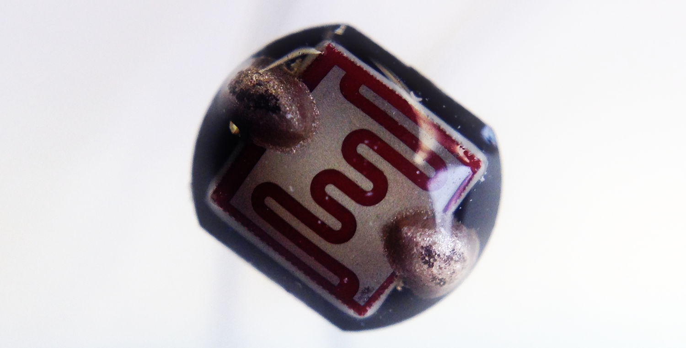

<div class="jumbotron">
<div class="row">
  <div class="col-md-8 col-md-offset-2">
  <!-- <div class="well"> -->
<h5>About</h5>
<h1 id="headline">{{ page.title }}</h1>

<p class="hello">
In this project we try to visualize binary states in the physical world using nothing more than one flipdot.
</p>
<p id="thanks" class="hello">supervised by<br>
  Cedric Kiefer &amp; Fabian Morón Zirfas</p>
  <!-- </div> -->
  </div>
</div>

</div>
